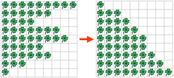
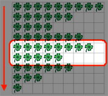

Kara hat etwas gegen Unordnung. Daher beschliesst er, die Balken von Kleeblätter in seiner Welt zu sortieren. Ein mögliches Sortierverfahren ist BubbleSort.
Bubblesort funktioniert wie in der untenstehenden Abbildung dargestellt. Man "durchläuft" von oben nach unten die Welt und vergleicht immer zwei "Balken" von Kleeblättern miteinander. Wenn der untere kürzer ist als der obere, müssen sie vertauscht werden. Wenn zwei Balken vertauscht werden, muss nochmals vorne anfangen werden. Erst wenn bei einem Durchlauf aller Balken keine vertauscht werden mussten, sind sie sortiert.
